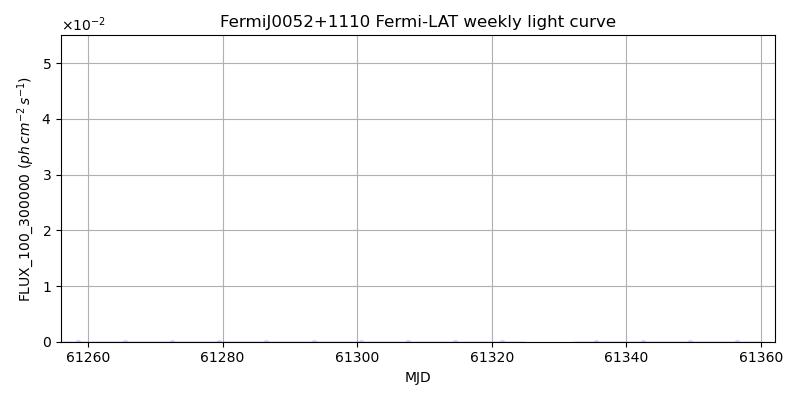
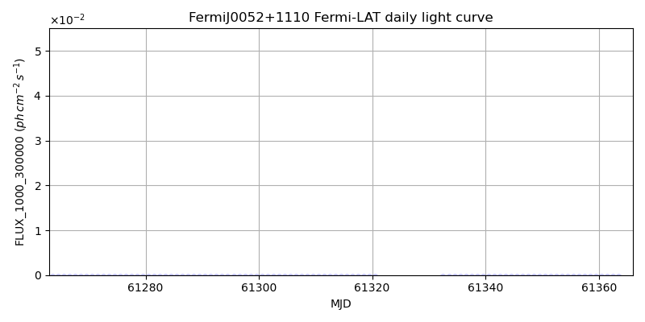
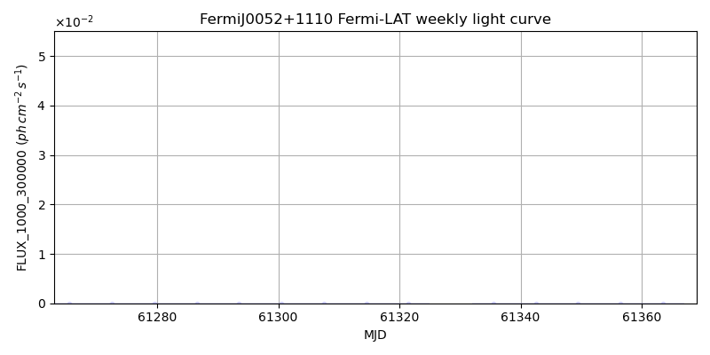

LAT Lightcurve site: https://fermi.gsfc.nasa.gov/ssc/data/access/lat/msl_lc/source/Fermi_J0052p1110
NED: Query
Time of last update of this page: UT: 2026-11-28 16:11 (MJD: 61372.674)
| Property | Value |
|---|---|
| R.A. | 0:52:21.60 |
| Dec. | 11:09:36.0 |
| z | 0.000 |
| 3FGL SpectrumType | |
| 3FGL PL Index | -1.00 |
| 3FGL Flux_100_300000 | -1.00e+00 |
| 3FGL Flux_1000_300000 | -1.00e+00 |
| 3FGL Flux >200 GeV | -1.00e+00 |
| 3FGL Extrap. Crab >200 GeV | -1.00 |
| 3FGL Flux After EBL Absorption >200GeV | -1.00e+00 |
| 3FGL EBL Crab Fraction >200GeV | -1.00 |
| MJD | dMJD | Flux | dFlux | Frac3FGL | FracCrab>200GeV | EBLFracCrab>200GeV |
|---|---|---|---|---|---|---|
| 61367.50 | 0.50 | 7.91e-08 | 0.00e+00 | 0.00 | 0.00 | -0.00 |
| 61368.50 | 0.50 | 8.05e-08 | 0.00e+00 | 0.00 | 0.00 | -0.00 |
| 61369.50 | 0.50 | 1.56e-07 | 0.00e+00 | 0.00 | 0.00 | -0.00 |
| 61370.50 | 0.50 | 1.67e-07 | 0.00e+00 | 0.00 | 0.00 | -0.00 |
| 61371.50 | 0.50 | 1.12e-07 | 0.00e+00 | 0.00 | 0.00 | -0.00 |

| MJD | dMJD | Flux | dFlux | Frac3FGL | FracCrab>200GeV | EBLFracCrab>200GeV |
|---|---|---|---|---|---|---|
| 61335.50 | 3.50 | 8.17e-08 | 0.00e+00 | 0.00 | 0.00 | -0.00 |
| 61342.50 | 3.50 | 6.68e-08 | 0.00e+00 | 0.00 | 0.00 | -0.00 |
| 61349.50 | 3.50 | 9.46e-08 | 0.00e+00 | 0.00 | 0.00 | -0.00 |
| 61356.50 | 3.50 | 2.28e-08 | 0.00e+00 | 0.00 | 0.00 | -0.00 |
| 61363.50 | 3.50 | 4.47e-08 | 0.00e+00 | 0.00 | 0.00 | -0.00 |

| MJD | dMJD | Flux | dFlux | Frac3FGL | FracCrab>200GeV | EBLFracCrab>200GeV |
|---|---|---|---|---|---|---|
| 61367.50 | 0.50 | 1.98e-08 | 0.00e+00 | 0.00 | 0.00 | -0.00 |
| 61368.50 | 0.50 | 2.15e-08 | 0.00e+00 | 0.00 | 0.00 | -0.00 |
| 61369.50 | 0.50 | 5.68e-08 | 0.00e+00 | 0.00 | 0.00 | -0.00 |
| 61370.50 | 0.50 | 2.15e-08 | 0.00e+00 | 0.00 | 0.00 | -0.00 |
| 61371.50 | 0.50 | 3.59e-08 | 0.00e+00 | 0.00 | 0.00 | -0.00 |

| MJD | dMJD | Flux | dFlux | Frac3FGL | FracCrab>200GeV | EBLFracCrab>200GeV |
|---|---|---|---|---|---|---|
| 61335.50 | 3.50 | 2.94e-09 | 0.00e+00 | 0.00 | 0.00 | -0.00 |
| 61342.50 | 3.50 | 2.70e-09 | 0.00e+00 | 0.00 | 0.00 | -0.00 |
| 61349.50 | 3.50 | 2.41e-09 | 0.00e+00 | 0.00 | 0.00 | -0.00 |
| 61356.50 | 3.50 | 3.24e-09 | 0.00e+00 | 0.00 | 0.00 | -0.00 |
| 61363.50 | 3.50 | 3.91e-09 | 0.00e+00 | 0.00 | 0.00 | -0.00 |
--------------------------------------------------------- Using user-supplied coords: 0:52:21.60 11:09:36.0 2000 --------------------------------------------------------- FLWO UT night of: 2026-11-29 Local Sid. @ Midnight: 04:08 Sunset (-15.0) (local, UT): 18:31 01:31 Sunrise (-15.0) (local, UT): 05:53 12:53 Moonrise (local, UT): 21:57 04:57 Moonset (local, UT): Moon phase: 0.72 --------------------------------------------------------- AzTime LSID UT Obj_el Obj_az Mn_el Mn_az Sep. --------------------------------------------------------- 18:31 22:39 01:31 52.9 115.8 -32.9 32.1 112.2 19:01 23:09 02:01 58.5 124.4 -29.4 38.9 112.6 19:31 23:39 02:31 63.4 135.8 -25.4 45.0 112.9 20:01 00:09 03:01 67.2 150.9 -21.0 50.6 113.3 20:31 00:39 03:31 69.4 170.1 -16.2 55.6 113.6 21:01 01:09 04:01 69.3 191.1 -11.1 60.2 114.0 21:31 01:39 04:31 67.0 210.1 -5.4 64.5 114.3 22:01 02:09 05:01 63.1 225.0 0.4 68.5 114.6 22:31 02:39 05:31 58.2 236.2 5.8 72.2 114.9 23:01 03:10 06:01 52.6 244.7 11.6 75.8 115.2 23:31 03:40 06:31 46.7 251.5 17.5 79.4 115.5 00:01 04:10 07:01 40.5 257.1 23.6 82.9 115.7 00:31 04:40 07:31 34.2 261.9 29.7 86.5 116.0 01:01 05:10 08:01 27.9 266.3 35.8 90.3 116.2 01:31 05:40 08:31 21.5 270.3 42.0 94.4 116.5 02:01 06:10 09:01 15.1 274.2 48.1 99.1 116.7 02:31 06:40 09:31 8.8 278.0 54.2 104.7 116.9 03:01 07:10 10:01 2.6 281.8 60.1 111.7 117.1 03:31 07:40 10:31 -2.4 285.8 65.6 121.1 117.3 04:01 08:10 11:01 -9.9 290.0 70.5 134.7 117.5 04:31 08:40 11:31 -15.9 294.5 74.0 154.7 117.7 05:01 09:11 12:01 -21.6 299.4 75.2 181.1 117.9 05:31 09:41 12:31 -27.0 304.9 73.6 206.8 118.1 05:53 10:02 12:53 -30.7 309.3 71.0 221.2 118.2 --------------------------------------------------------- Dark hours >55 deg.: 3.25 srcstart (UT): 2026-11-29 01:42 srcend (UT): 2026-11-29 04:57